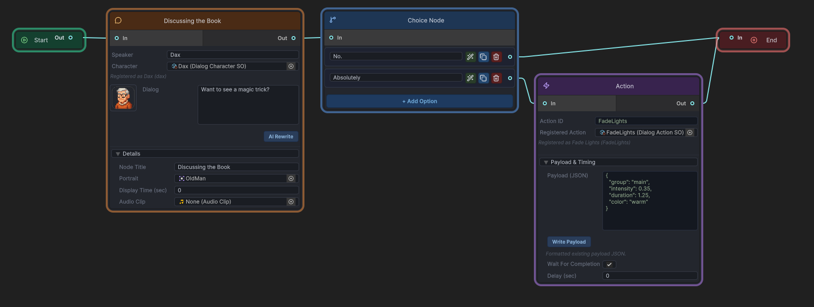

Core Concepts
These are the concepts that appear across the runtime, editor, JSON workflow, and AI extension. Lock these first and the rest of the system becomes much easier to reason about.
DialogGraph
DialogGraph is the primary content asset. It stores directed links, dialog nodes, choice nodes, action nodes, and editor-facing start/end marker data. The graph uses GUID-based links rather than scene references, which keeps it portable for asset workflows and JSON import/export.
Node types
Start
The entry marker. DialogManager resolves the first playable node by reading the outgoing link from startGuid.
DialogNode
A spoken line with speaker name, portrait, question text, optional audio clip, and optional display time.
ChoiceNode
A decision point with optional prompt text, a list of Choice entries, and one outgoing path per choice index.
ActionNode
A runtime side effect with actionId, payloadJson, optional pre-delay, and optional wait-for-completion behavior.
End
The terminal marker.

Dialog IDs
Gameplay code generally starts conversations by dialogID, not by direct asset reference. DialogManager.dialogGraphs maps each ID to a graph asset. That same mapping also enables conversation-specific action sets, branch-path persistence, and transcript lookup by ID.
Settings model
The settings system uses a master asset plus sub-assets: DialogSystemSettings, DialogTextSettings, DialogChoiceSettings, DialogInputSettings, and DialogAudioSettings. Runtime code reads them through DialogSettingsRuntime.
History versus transcript
DialogueHistory records what was shown and chosen during runtime for UI backlog display. DialogGraphTranscriptBuilder reconstructs the exact played branch from the graph and recorded branch-path indices. History is good for player-facing review; transcripts are better for deterministic branch reconstruction.
JSON workflow
The system supports exporting and importing graph JSON for backup, source review, migration, and controlled external tooling. The graph asset remains the canonical source of truth after import.
AI workflow
The optional AI extension uses character profiles, world/context data, allowed action definitions, scene summary, tone, and provider configuration to produce preview-first draft edits inside an open graph. It does not ship a raw full-graph generation/import workflow.